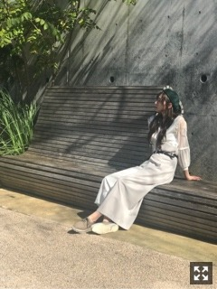

気づけば街はすっかりクリスマスモードでした、
みなさまこんにちは！！
乃木坂46の
梅澤美波です！
いつかのわたし〜
最近自撮りしてなさすぎて
写真がないです、、
たくさん撮らねばっ
今年はあまり寒くないのか
まだコートを着ずにいます、、
早く着たい、、
そしてお買い物に行きたいなあ〜
舞台「ザンビ」
初日を無事迎えることが出来ました！
ザンビプロジェクト第一弾、
遂に始動しました！
キャストの皆様、
アンサンブルの皆様、
スタッフの皆様、
全員で迎えることができて本当に幸せです。
わたしは一ノ瀬杏奈を
演じさせていただきます。
この子と向き合う中で
教わることがたくさんあり
出逢えて良かったなあと感じています
とても難しい役所。本当に。
でもだからこそ
向き合えて、出逢えて幸せです( ¨̮ )
正直、自分の中で悩みに悩んで
頭を抱える毎日で
壁にぶつかってばかりで
難しくて上手くいかなくて
悔しくって悔しくって仕方なくて
分からなくなることもありました、
正解はないけど、、
私なりの杏奈を、と思い
毎日奮闘してきました
とにかく千秋楽まで
全員で怪我なく迎えられるよう
頑張りたいと思います！！
千秋楽終えたら
また詳しく書きます∠( ˙-˙ )／
明日、１９日は
サイリウム使用可能なので
ぜひ一緒に楽しみましょうっ
青×水色です( ¨̮ )
よろしくお願いしますっ∠( ˙-˙ )／
出演させて頂くことになりました！
遅めの発表になってしまい
申し訳ないです(；；)
ですが頑張ります！！
とっても楽しみです！！
お越しくださる方は
ぜひ楽しみに待っていてくださいっ！！
ももこ〜
髪の毛が好きみたいですこの子は
先日の山下と出演させて頂いた、
ニッポン放送でのオールナイトニッポン！
お聴きくださった皆様
ありがとうございました( ¨̮ )！
不安だったけど
とにかく楽しめましたっ
2時間本当にあっという間だった〜
素敵な機会を頂きました。
もっと喋れるようになりたいっ
また出演出来るよう頑張ります！！
そして１４日に２２枚目シングルも
発売になりました〜！！ぱちぱち
遂に！です！
今回も本当に素敵な楽曲ばかりです。
大切な曲が増えていきます。( ¨̮ )
皆様ぜひお手に取って見てくださいね☺︎

BRODY さまオフショット！
代官山での撮影
本当に楽しかったなあ〜
お知らせ◎
《雑誌》
▽日経エンタテインメント！ さま 連載
▽１１／２４ B.L.T. さま 表紙
▽１１／３０ BUBKA さま りりあと
▽１２／１ bis さま
世界観が、お洋服が、
大好きだったbisさんの1月号に
出させていただきますっ！！！
本当に嬉しいとっても念願でした、、(；；)
梅澤美波特集を組んでいただきました(；；)
撮影ものすごくものすごく楽しくて、
色んな私に変身しちゃいました！！
見たことない私が沢山いるはず！！
ぜひ！チェックしてくださいっ！
まだお知らせしたいものも
いくつかあるので
情報解禁までお待ちをっ☺︎
《ラジオ》
▽毎週月曜〜木曜 「乃木坂46梅澤美波の『のぎぼき』！」
《舞台》
▽１１／１６〜２５ 「ザンビ」
半顔、、( .. )（笑）
そして、
２０１８年紅白歌合戦に
乃木坂46が出演させて頂くことになりました！
当たり前ではないこと、
毎日の日々を大切にしなきゃなと
改めて思います。
２０１８年の締めくくりを
大好きな乃木坂46で過ごして
最高に楽しんで終われたらいいなと思います。
いつもたくさんの応援
本当にありがとうございます。☺︎
今後もよろしくお願いします！
それでは
また更新しますっ
明日も頑張るぞ〜
毎日夜寝る前は空を眺めます〜
心が落ち着きます、
何をする訳でもなくそんな時間が好きな梅澤です〜
Original：https://www.nogizaka46.com/s/n46/diary/detail/47836?ima=4947&cd=MEMBER